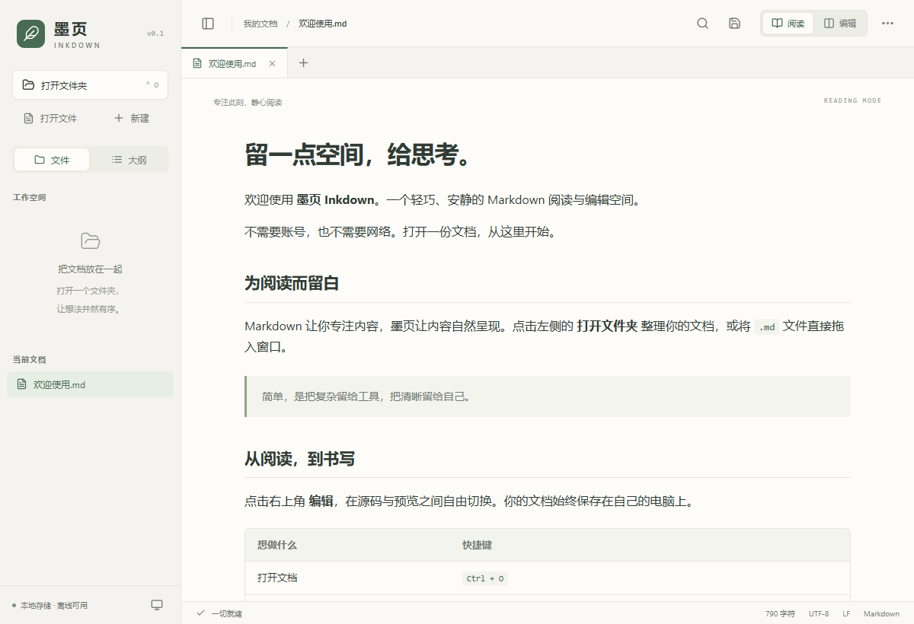

读得舒服
舒适的行距与阅读宽度，支持 50%–200% 文档缩放。浅色、深色与跟随系统主题，配合文档大纲自在阅读。
一个轻巧的 Markdown 阅读与编辑空间。
打开你的文档，让内容自然呈现。
Windows 10 / 11 · x64 免费开源 · MIT 许可

Tauri + 系统 WebView2
不额外打包 Chromium
文档与渲染都在本地
无需账号，无需云端
MIT 许可，源码公开
你的文件，始终属于你
01 / 为内容留白
舒适的行距与阅读宽度，支持 50%–200% 文档缩放。浅色、深色与跟随系统主题，配合文档大纲自在阅读。
源码与实时预览并排显示。滚动编辑区，预览跟随对应内容；支持搜索替换、撤销、语法高亮，以及一键导出 A4 PDF。
表格、任务列表、代码高亮、KaTeX 公式与 Mermaid 图表。常用渲染资源随软件打包，离线也能呈现。
按需展开的文件夹树，多标签切换，本地图片与文档链接。保存前检查外部修改，遇到冲突由你决定。
安装版适合日常使用；免安装版解压即可运行。
下载安装版 NSIS下载免安装版 ZIP
需要 Windows 10 / 11 x64 和 WebView2。
当前版本未签名，Windows
可能显示未知发布者提示。
03 / 你可能想知道
安装后打开墨页，点击「打开文件」选择 Markdown 文档，或直接拖入文档。按 Ctrl+E 切换编辑，Ctrl+S 保存。免安装版请先完整解压 ZIP，再运行 Inkdown.exe。
日常阅读与编辑不需要联网。公式、图表、字体都随软件打包。若电脑缺少 WebView2，首次安装需要联网补齐微软运行时。
不会。墨页不提供云同步，文件保存在你的电脑上。网络图片默认不加载；只有点击外部链接时才会使用系统浏览器打开。
下载 SHA256SUMS.txt，在 PowerShell 中运行
Get-FileHash .\文件名 -Algorithm SHA256，与文件中的对应值比较。也可从
GitHub HTTPS 备用入口取得安装包与校验文件。
目前支持 Windows 10/11 x64，读取 UTF-8 编码的 .md、.markdown 和 .mdown 文件。暂不提供 macOS、Linux 发行版，也没有自动更新功能。
BUILT IN THE OPEN
源代码公开，欢迎反馈问题、分享建议，或提交你的改进。